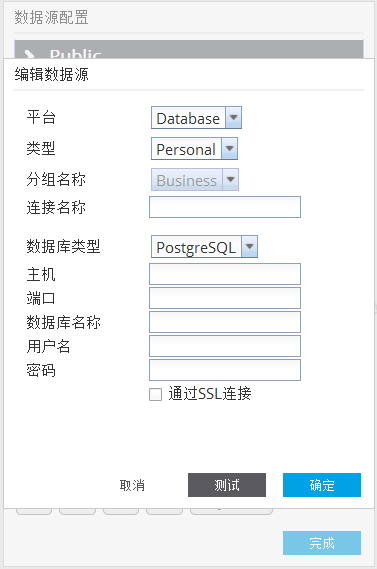

数据连接配置
点击用户名后的按钮后点击数据库连接选项。打开数据库连接管理窗口。
窗口左侧将用户所能访问的连接分为“公共”、“群组”、“个人”三个类别。
其中，系统用户都可以访问公共类别中的连接信息，组用户可以访问本组内的连接信息。个人类别的连接信息只能本人访问。
可以通过右击连接名称后点击“复制”选项，将公共/群组中的连接复制到个人连接信息中进行编辑和使用。
点击一条连接信息后，连接的详细信息将显示在右侧窗口中。
提示：通过导入JDBC驱动可以导入待连接数据库的连接驱动程序。
在要创建连接的的类别中右击任意位置后点击“创建连接”选项会打开创建数据库连接窗口。其中分组名称只有在群组类别下才可选择。填写完相应信息后点击确定按钮进行保存。

以下是创建数据库连接的步骤：
- 在数据库连接对话框内填入以下内容：
- 连接名称： 辨别数据库连接的唯一标示
- 数据库类型： Alpine 现支持Greenplum/Postgres和Oracle数据库
- JDBC路径：此项仅为Oracle数据库添加JDBC文件。如果JDBC文件已被添加到，此项无法被选择。
- 主机： 数据库服务器的主机名或IP
- 端口： 数据库服务的端口号
- 数据库名称： 要连接数据库的名称
- 用户名： 登录用户名
- 密码： 登录密码
- 使用 SSL:是否使用 SSL 连接到数据库 (只适用于 PostgreSQL 和GreenPlum)
- 请注意 如果选者使用SSL ，您需要以下配置以确保系统能正常工作:
- 从数据库服务器中拷贝 server.crt 文件到本机（运新Alpine的机器）。
- 从本机打开命令行根据并进入该文件夹。
- 运行以下命令 : openssl x509 -in server.crt -out server.crt.der -outform der
- 运行以下命令 (可能需要root 权限): keytool -keystore $JAVA_HOME/lib/security/cacerts -alias postgresql -import -file server.crt.der
- 启动 Alpine （如果已经启动请重启） , 此时应该可以连接到已配置 SSL的 PostgreSQL 或 GreenPlum 数据库。
- 如需了解更多，请点击 此链接
点击左侧连接信息名称后，该连接信息将显示在右侧窗口中。点击确定按钮对修改的内容进行保存。